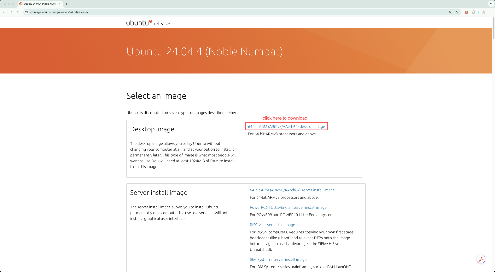
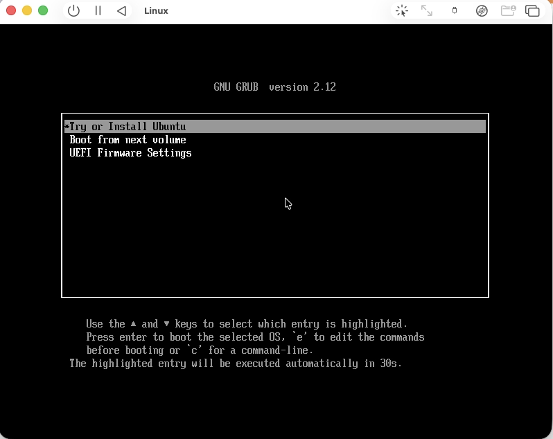
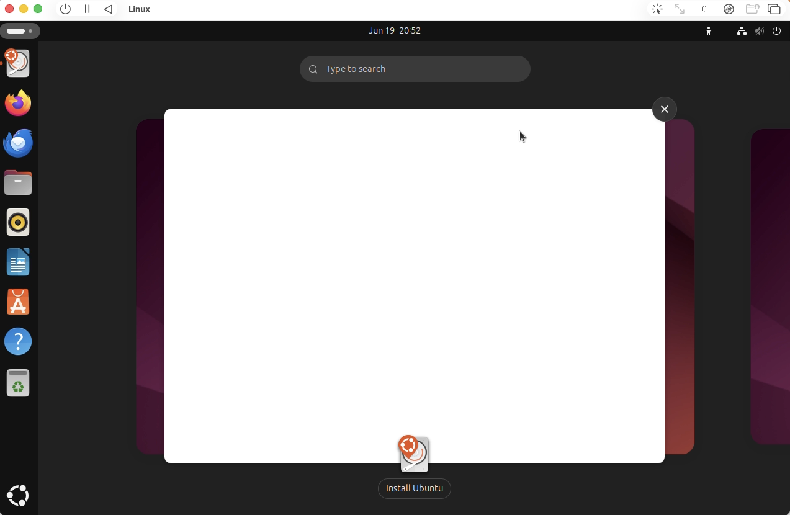
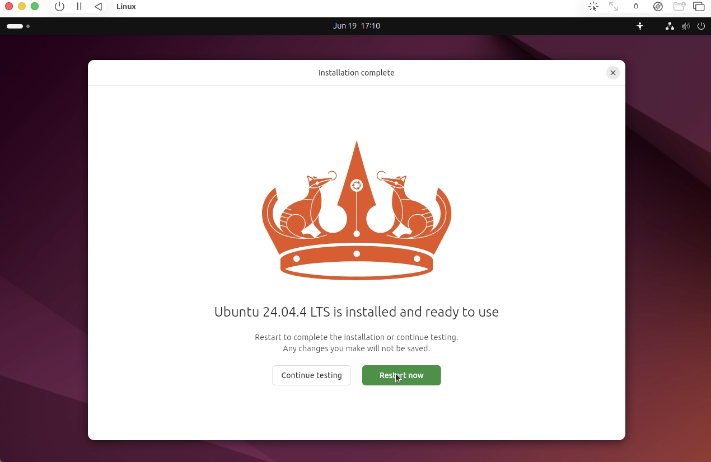
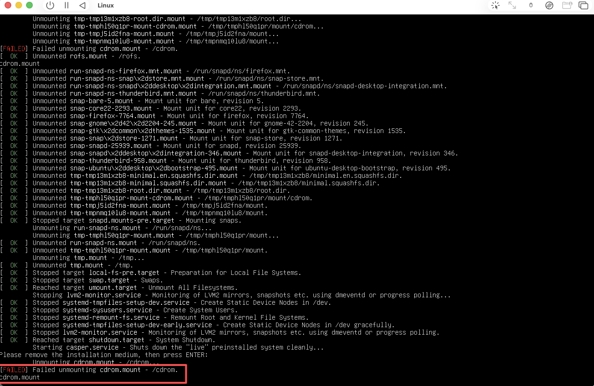
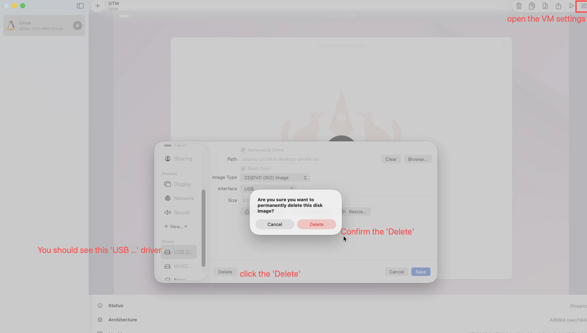
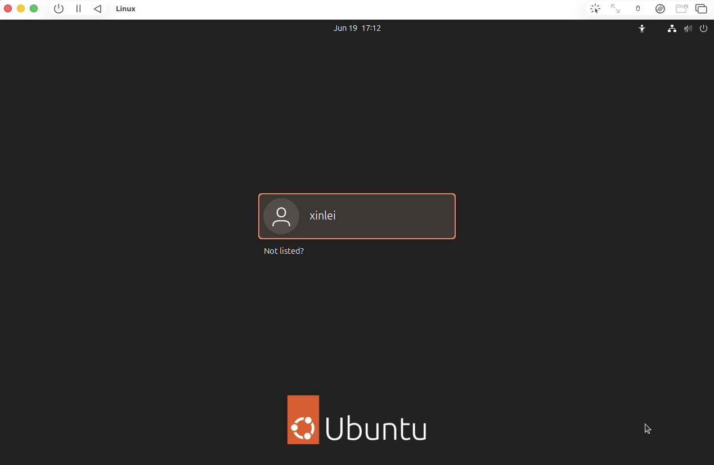

Installing the Virtual Machine
The following steps take approximately 45 minutes to complete.
ROS2 and most robotics simulation tools run on Linux, which differs from the macOS or Windows operating system you are likely using. This section walks you through setting up a Linux virtual machine for ROS2 development. Choose your host operating system below.
Step 1: Install the UTM Application
UTM is the virtualization tool we will use to create and run a Linux virtual machine on macOS. Visit https://mac.getutm.app/ to download and install UTM. Once installed, open the application — we will return to it shortly.
Step 2: Download the Ubuntu 24.04 Image
Navigate to https://cdimage.ubuntu.com/releases/24.04/release/ to download the Desktop image. Make sure you select the ARMv8 version, not AMD (which is for Windows/Intel systems). The download may take up to 20 minutes depending on server availability.

Step 3: Create the Virtual Machine
Follow these steps to create the Ubuntu 24.04 virtual machine in UTM:
- Open UTM and click
Create a New Virtual Machine. - Select
Virtualize. - Choose
Linuxas the operating system. - Configure the hardware settings: set memory to at least
8192MiB, CPU cores to at least4, and enableEnable hardware OpenGL acceleration(Enable display outputshould already be checked by default). - Browse to the
.isoimage you downloaded in Step 2. - Set the storage size to at least
100GiB. - For the shared directory, create a new folder on your host machine first, then browse to it. This folder will be shared between your macOS host and the Ubuntu virtual machine.
- Review the summary and click
Save.
Step 4: Install Ubuntu on the Virtual Machine
Click the play button to start the virtual machine. A new window will appear showing the UTM logo, followed by the Ubuntu installation screen below.

Press Enter to begin the installation. After approximately 30 seconds, you will see the screen below, indicating that Ubuntu 24.04 has been successfully loaded. Click the window to continue.

Next, proceed through the initial setup:
- Click
Nextto accept the defaults forLanguage,Accessibility,Keyboard Layout, andInternet Connection. - Do not click
Update now— clickSkipinstead. Updating may upgrade Ubuntu to a newer version that is incompatible with ROS2 Jazzy. - Keep the default
Install Ubuntuand clickNext. - Keep the default
Interactive installationand clickNext. - Keep the default
Default selectionand clickNext. - Check both
Install third-party software for graphics and Wi-Fi hardwareandDownload and install support for additional media formats. - Keep the default
Erase disk and install Ubuntuand clickNext. - Create your account name, computer name, username, and password. Choose a short, simple password — you will need to enter it frequently.
- Select your timezone and click
Install. The installation takes approximately 10 minutes.
When the installation is complete, you will see the screen below. Click Restart now.

You will see an error line as shown below. This is expected. Turn off the virtual machine and confirm when prompted about unsaved changes.

Before restarting, we need to remove a USB driver that causes boot issues. Follow these steps (see the figure below for reference):
- Click the settings button in the upper-right corner to open the VM settings.
- Scroll down to find the USB drive entry and select it.
- Delete the drive and confirm the deletion.
- Save the changes.
- Restart the virtual machine. You may briefly see a black screen with the message
Display output is not activewhile it boots — this is normal.

Once the system finishes booting, you will see the login screen below. Click your username and enter your password to login.

Congratulations — you have successfully installed the virtual machine!
Windows Setup
Placeholder paragraph for Windows instructions. Use
highlighted text for key points,
and inline code for paths like C:\Users\.
$ wsl --install -d Ubuntu-24.04
$ # WSL will restart your machine